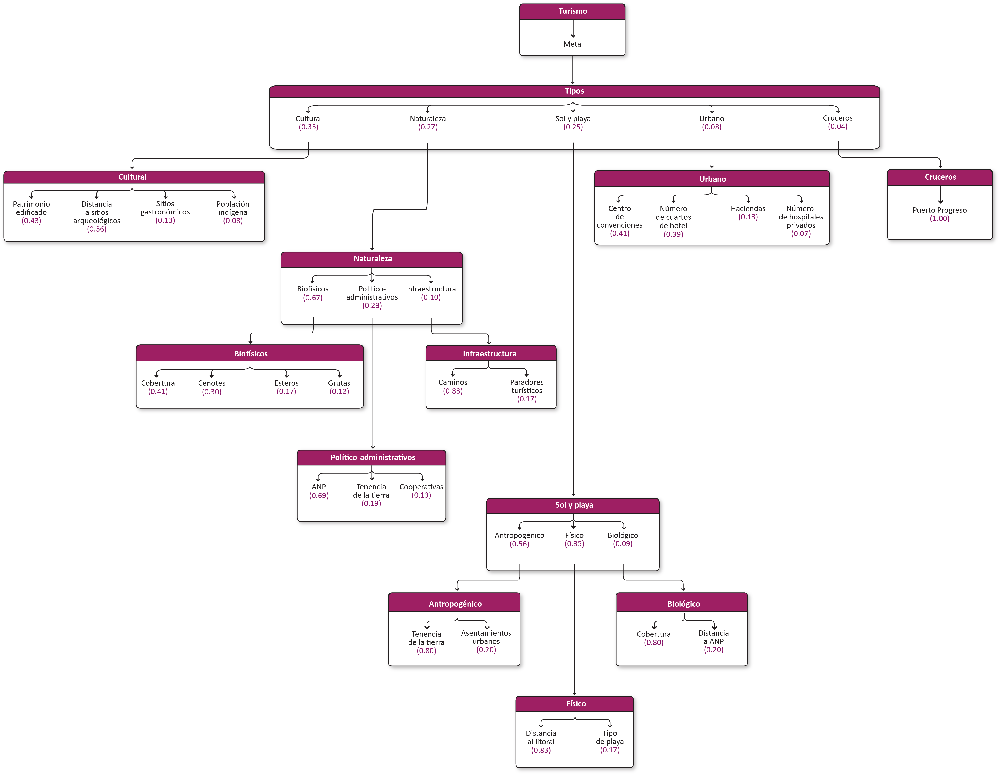
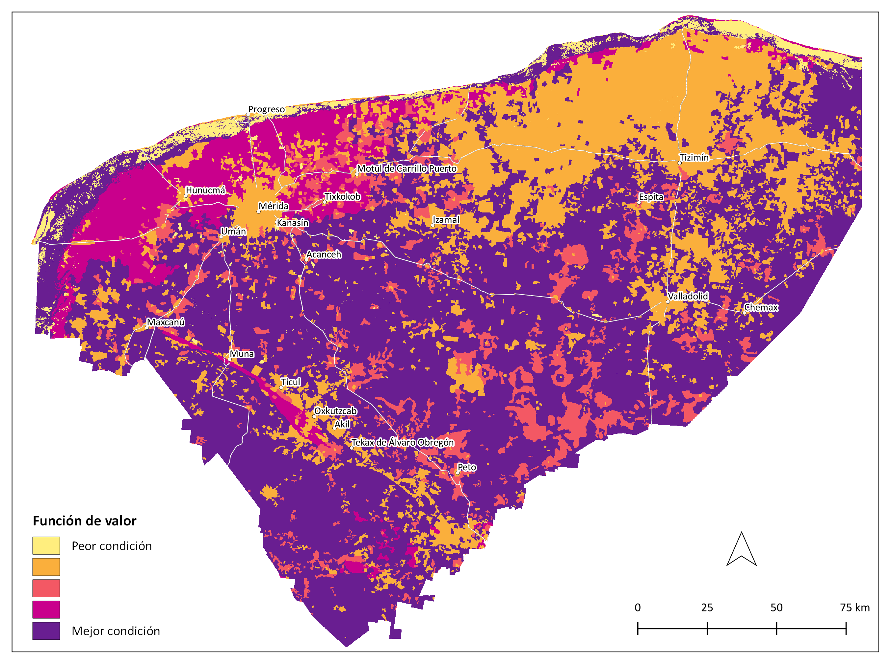

Turismo-En proceso de actualización¶
Meta¶
Desarrollar y promocionar un modelo de turismo sustentable y diversificado, que oferte un balance entre el turismo tradicional y el turismo comunitario-rural y biocultural.
1.1 Modelo de decisión¶

1.2 Tipos¶
1.2.1 Cultural¶
Viaje turístico para conocer, comprender y disfrutar el conjunto de rasgos y elementos distintivos, espirituales y materiales, intelectuales y afectivos que caracterizan a una sociedad o grupo social de un destino específico. Incluye turismo rural.
| Atributos | Definición |
|---|---|
| Patrimonio edificado | Número de registros de patrimonio edificado por localidad (patrimonio heredado del pasado, con relevancia cultural, histórica, artística, identitaria, etc. (Valladolid, Izamal, Dzilam, Maní, Motul, Buctzotz). |
| Distancia a sitios arqueológicos | Distancia a sitios arqueológicos (Sitios con vestigios de civilizaciones o culturas antiguas, con posibilidad de ser visitados por los turistas). |
| Sitios gastronómicos | Presencia de lugares con instalaciones y activades destinadas a dar a conocer la gastronomía típica. |
| Población indígena | Porcentaje de la población municipal de 3 años y más que son mayahablantes. |
1.2.1.1 Patrimonio edificado¶
Número de registros de patrimonio edificado por localidad (patrimonio heredado del pasado, con relevancia cultural, histórica, artística, identitaria, etc. (Valladolid, Izamal, Dzilam, Maní, Motul, Buctzotz).
Insumos
| Capa | Patrimonio histórico por localidad |
|---|---|
| Fuente | [1] Inventario de bienes inmuebles con carácter de patrimonio histórico del estado de Yucatán SEDUMA y [2] Polígonos de localidades. Marco Geoestadístico. Censo de Población y Vivienda INEGI |
| Año | [1] Sin dato; [2] 2020 |
| Escala | Sin dato |
| Unidades | Número de edificaciones |
Parámetros de la función de valor

Función de valor de patrimonio edificado
1.2.1.2 Distancia a sitios arqueológicos¶
Distancia a sitios arqueológicos (Sitios con vestigios de civilizaciones o culturas antiguas, con posibilidad de ser visitados por los turistas).
Insumos
| Capa | Distancia a sitios arqueológicos |
|---|---|
| Fuente | [1] Sitios arqueológicos INAH; [2] Mapa turístico del estado de Yucatán Gobierno de Yucatán |
| Año | [1] 2012; [2] 2021 |
| Escala | Sin dato |
| Unidades | Kilómetros |
Parámetros de la función de valor

Función de valor de distancia a sitios arqueológicos
1.2.1.3 Sitios gastronómicos¶
Presencia de lugares con instalaciones y activades destinadas a dar a conocer la gastronomía típica.
Insumos
| Capa | Localidades con relevancia gastronómica |
|---|---|
| Fuente | Polígonos de localidades. Marco Geoestadístico. Censo de Población y Vivienda INEGI |
| Año | 2020 |
| Escala | Sin dato |
| Unidades | Adimensional |
Función de valor de sitios gastronómicos
1.2.1.4 Población indígena¶
Porcentaje de la población municipal de 3 años y más que son mayahablantes.
Insumos
| Capa | Población indígena |
|---|---|
| Fuente | [1] Polígonos de municipios.División política municipal INEGI y [2] Datos de indicador. Censo de Población y Vivienda INEGI |
| Año | [1] 2018 y [2] 2020 |
| Campo | [2] POBTOT y P3YM_HLI |
| Escala | Municipal |
| Unidades | Porcentaje |
Parámetros de la función de valor

Función de valor de población indígena
1.2.2 Naturaleza¶
Viajes para realizar actividades recreativas en contacto directo con la naturaleza. Incluye turismo de aventura, ecoturismo, aviturismo, comunitario.
| Atributos | Definición |
|---|---|
| Biofísicos | Elementos o formaciones geológicas con características únicas que satisfacen necesidades de recreación y esparcimiento. |
| Político-administrativo | Atributos administrativos y de gestión relacionados con el turismo de naturaleza. |
| Infraestructura | Atributos de infraestructura asociados al turismo de naturaleza. |
1.2.2.1 Biofísicos¶
Elementos o formaciones geológicas con características únicas que satisfacen necesidades de recreación y esparcimiento.
| Atributos | Definición |
|---|---|
| Cobertura | Tipo de vegetación y uso de suelo |
| Cenotes | Presencia de cenotes |
| Esteros | Presencia de cuerpos de agua costeros que no están incluidos en la capa de cobertura (lagunas costeras, marismas y esteros). |
| Grutas | Presencia de grutas (cavidad que se forma en las rocas por procesos erosivos, principalmente por disolución causada por el agua de lluvia que se filtra entre rocas calcáreas y las disuelve). |
1.2.2.1.1 Cobertura¶
Tipo de vegetación y uso de suelo.
Insumos
| Capa | Uso del suelo y vegetación |
|---|---|
| Fuente | Conjunto de datos vectoriales de la carta de Uso del suelo y vegetación. Serie VI. Conjunto Nacional INEGI |
| Año | 2017 |
| Campo | descripcio |
| Escala | 1:250,000 |
| Unidades | Adimensional |
Función de valor de cobertura

1.2.2.1.2 Cenotes¶
Presencia de cenotes.
Insumos
| Capa | Distancia a cenotes turísticos |
|---|---|
| Fuente | Cenotes con potencial turístico SEDUMA |
| Año | Sin dato |
| Escala | Sin dato |
| Unidades | Kilómetros |
1.2.2.1.3 Esteros¶
Presencia de cuerpos de agua costeros que no están incluidos en la capa de cobertura (lagunas costeras, marismas y esteros).
Insumos
| Capa | Distancia a lagunas costeras, esteros y marismas |
|---|---|
| Fuente | Modelo cartográfico de humedales INEGI |
| Año | 2014 |
| Campo | SUBCLASE |
| Escala | 1:50,000 |
| Unidades | Kilómetros |
1.2.2.1.4 Grutas¶
Presencia de grutas (cavidad que se forma en las rocas por procesos erosivos, principalmente por disolución causada por el agua de lluvia que se filtra entre rocas calcáreas y las disuelve).
Insumos
| Capa | Distancia a grutas |
|---|---|
| Fuente | Cenotes y Grutas con infraestructura turística y posicionamiento satelital SEDUMA |
| Año | Sin dato |
| Escala | Sin dato |
| Unidades | Kilómetros |
1.2.2.2 Político-administrativo¶
Atributos administrativos y de gestión relacionados con el turismo de naturaleza.
| Atributos | Definición |
|---|---|
| ANP | Presencia de áreas naturales protegidas de competencia federal, estatal o municipal. |
| Tenencia de la tierra | Tipo de tenencia de la tierra: Áreas ejidales (comunitaria o parcelada) y no ejidales. |
| Cooperativas | Número de cooperativas que ofrecen servicios de turismo de naturaleza. |
1.2.2.2.1 ANP¶
Presencia de áreas naturales protegidas de competencia federal, estatal o municipal.
Insumos
| Capa | Áreas Naturales Protegidas |
|---|---|
| Fuente | [1] Áreas Naturales Protegidas SDS, [2] Áreas Naturales Protegidas Federales de la República Mexicana CONANP y [3] Áreas Naturales Protegidas Estatales, Municipales, Ejidales y Privadas de México CONABIO |
| Año | [1] 2020; [2] 2017; [3] 2015 |
| Escala | Sin dato |
| Unidades | Adimensional |
1.2.2.2.2 Tenencia de la tierra¶
Tipo de tenencia de la tierra: Áreas ejidales (comunitaria o parcelada) y no ejidales.
Insumos
| Capa | Tenencia de la tierra |
|---|---|
| Fuente | [1] Zonas de Tierras Parceladas RAN y [2] Tierra de uso común RAN |
| Año | 2020 |
| Escala | Sin dato |
| Unidades | Adimensional |
1.2.2.2.3 Cooperativas¶
Número de cooperativas que ofrecen servicios de turismo de naturaleza.
1.2.2.3 Infraestructura¶
Atributos de infraestructura asociados al turismo de naturaleza.
| Atributos | Definición |
|---|---|
| Caminos | Presencia de caminos, brechas, terracerías |
| Ciclovías | Presencia de ciclovías |
| Paradores turísticos | Presencia de paradores (lugares que ofrecen instalaciones, servicios y posibilidades para que los turistas disfruten su experiencia al máximo). |
1.2.2.3.1 Caminos¶
Presencia de caminos, brechas, terracerías.
Insumos
| Capa | Caminos y veredas |
|---|---|
| Fuente | Red Nacional de Caminos (RNC) Red vial - INEGI |
| Año | 2019 |
| Campo | TIPO_VIAL |
| Escala | Sin dato |
| Unidades | Adimensional |
1.2.2.3.2 Ciclovías¶
Presencia de ciclovías.
1.2.2.3.3 Paradores turísticos¶
Presencia de paradores (lugares que ofrecen instalaciones, servicios y posibilidades para que los turistas disfruten su experiencia al máximo).
Insumos
| Capa | Distancia a paradores turísticos |
|---|---|
| Fuente | Paradores turísticos SEFOTUR |
| Año | Sin dato |
| Escala | Sin dato |
| Unidades | Kilómetros |
1.2.3 Sol y playa¶
Turismo de sol y playa, segundas residencias y bodas.
| Atributos | Definición |
|---|---|
| Antropogénico | Atributos que describen las características antropogénicas del territorio. |
| Físico | Atributos asociados a las propiedades físicas del suelo y del ambiente. |
| Biológico | Atributos asociados a las propiedades biológicas del ambiente. |
1.2.3.1 Antropogénico¶
Atributos que describen las características antropogénicas del territorio.
| Atributos | Definición |
|---|---|
| Tenencia de la tierra | Áreas ejidales (comunitaria o parcelada) y no ejidales. |
| Asentamientos urbanos | Distancia a localidades urbanas >= 15,000 habitantes, vía carreteras. |
1.2.3.1.1 Tenencia de la tierra¶
Áreas ejidales (comunitaria o parcelada) y no ejidales.
Insumos
| Capa | Tenencia de la tierra |
|---|---|
| Fuente | [1] Zonas de Tierras Parceladas RAN y [2] Tierra de uso común RAN |
| Año | 2020 |
| Escala | Sin dato |
| Unidades | Adimensional |
1.2.3.1.2 Asentamientos urbanos¶
Distancia a localidades urbanas >= 15,000 habitantes, vía carreteras.
Insumos
| Capa | Distancia a localidades urbanas |
|---|---|
| Fuente | [1] Polígonos de localidades. Marco Geoestadístico. Censo de Población y Vivienda INEGI y [2] Red Nacional de Caminos (RNC) Red vial - INEGI |
| Año | [1] 2020; [2] 2019 |
| Campo | [1] AMBITO; [2] TIPO_VIAL |
| Escala | Sin dato |
| Unidades | Kilómetros |
1.2.3.2 Físico¶
Atributos asociados a las propiedades físicas del suelo y del ambiente.
| Atributos | Definición |
|---|---|
| Distancia al litoral | Distancia a zona costera |
| Tipo de playa | Tipo de playa, de acuerdo al sustrato (arenoso, artificial, lodoso, vegetado). |
| Tipo de suelo | Tipo de suelo (edafología) |
1.2.3.2.1 Distancia al litoral¶
Distancia a zona costera.
Insumos
| Capa | Distancia al litoral |
|---|---|
| Fuente | Litoral POETCY |
| Año | Sin dato |
| Escala | Sin dato |
| Unidades | Kilómetros |
Parámetros de la función de valor

Función de valor de distancia al litoral

1.2.3.2.2 Tipo de playa¶
Tipo de playa, de acuerdo al sustrato (arenoso, artificial, lodoso, vegetado).
Insumos
| Capa | Tipo de litoral |
|---|---|
| Fuente | Tipo de litoral POETCY |
| Año | Sin dato |
| Campo | TIPO |
| Escala | Sin dato |
| Unidades | Adimensional |
1.2.3.2.3 Tipo de suelo¶
Tipo de suelo (edafología).
Insumos
| Capa | Edafología |
|---|---|
| Fuente | Conjunto de datos vectoriales edafológico. Serie II (Continuo Nacional) INEGI |
| Año | 2014 |
| Campo | tipo_suelo |
| Escala | 1:250,000 |
| Unidades | Adimensional |
1.2.3.3 Biológico¶
Atributos asociados a las propiedades biológicas del ambiente.
| Atributos | Definición |
|---|---|
| Cobertura | Tipo de vegetación y uso del suelo. |
| Distancia a ANP | Distancia a áreas naturales protegidas costeras. |
1.2.3.3.1 Cobertura¶
Tipo de vegetación y uso del suelo.
Insumos
| Capa | Uso del suelo y vegetación |
|---|---|
| Fuente | Conjunto de datos vectoriales de la carta de Uso del suelo y vegetación. Serie VI. Conjunto Nacional INEGI |
| Año | 2017 |
| Campo | descripcio |
| Escala | 1:250,000 |
| Unidades | Adimensional |
1.2.3.3.2 Distancia a ANP¶
Distancia a áreas naturales protegidas costeras.
Insumos
| Capa | Distancia a Áreas Naturales Protegidas costeras |
|---|---|
| Fuente | [1] Áreas Naturales Protegidas SDS y [2] Áreas Naturales Protegidas Federales de la República Mexicana CONANP |
| Año | [1] 2020; [2] 2017 |
| Escala | Sin dato |
| Unidades | Kilómetros |
1.2.4 Urbano¶
Viajes que se realizan al interior de las zonas urbanas. Comprende convenciones, reuniones, negocios, médico y educativo.
Insumos
| Capa | Hoteles por localidad |
|---|---|
| Fuente | [1] Hoteles en la Península de Yucatán GeoComunes con datos de DENUE INEGI y [2] Polígonos de localidades. Marco Geoestadístico. Censo de Población y Vivienda INEGI |
| Año | [1] 2019: [2] 2020 |
| Escala | Sin dato |
| Unidades | Número |
| Capa | Unidades económicas de infraestructura hospitalaria-médica |
|---|---|
| Fuente | [1] Polígonos de localidades. Marco Geoestadístico. Censo de Población y Vivienda INEGI y [2] Datos de indicador. Directorio Estadístico Nacional de Unidades Económicas (DENUE) INEGI |
| Año | 2020 |
| Escala | Localidad |
| Unidades | Número |
1.2.5 Cruceros¶
Actividad turística que se realiza a bordo de un barco o buque, el cual brinda todos los servicios y facilidades similares a los de un gran hotel o resort del mundo.
Insumos
| Capa | Distancia a Puerto Progreso |
|---|---|
| Fuente | [1] Ubicación de los principales puertos de el estado de Yucatán POETY y [2] Red Nacional de Caminos (RNC) Red vial - INEGI |
| Año | [1] 2002; [2] 2019 |
| Campo | [2] TIPO_VIAL |
| Escala | Sin dato |
| Unidades | Kilómetros |